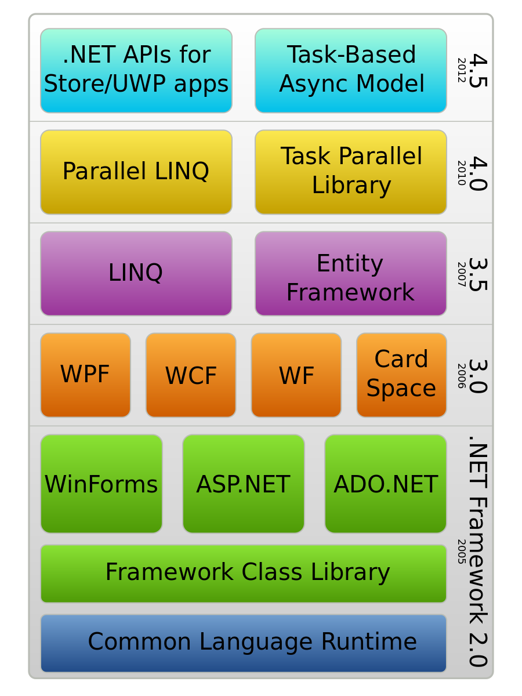

Microsoft'un 2000'li yılların başında piyasaya sürdüğü yeni nesil yazılım geliştirme ortamı olan .NET Framework, masaüstü uygulamalarının ve dağıtık uygulamaların temelini oluşturan Web servislerinin aynı çatı altında geliştirilmesine ortam sağlar ve bu amaçla birçok kütüphane ve servis içerir.
Yazılımcılar, farklı dillerde deneyimi olan kişilerin aynı çatı altında proje geliştirme zorluğu, yazılan bileşenlerin başka uygulamalarda sağlıklı bir şekilde kullanılmaması, kullanacağı kaynakların yönetimi zor olması çoğu zaman nesne yönelimli programların yeteneklerinin kullanılamadığı gibi sorunlar yaşamaktaydı.
Microsoft yeni bir ortam geliştirerek yazılımcılara ciddi bir kolaylık sağlamayı hedeflemiştir. Bu yeni çözüme .NET teknolojisi denildi ve bu teknolojinin çalıştırma ortamı da Framework olarak isimlendirildi.
.NET vizyonu, Microsoft tarafından, "İnsanlar, sistemler ve organizasyonlar arasındaki sınırları kaldırmak" olarak tanımlanmaktadır.
.NET teknolojisi, 22 Haziran 2000 perşembe günü "Forum 2000" olarak isimlendirilen toplantıda ilan edildi.
.NET Framework, XML Web Hizmetleri ve diğer yeni nesil uygulamaların geliştirildiği, dağıtımının yapıldığı ve çalıştırıldığı aynı kütüphanelerin kullanılarak hem Windows hem de Web uygulamalarının geliştirildiği ortamdır.
.NET Framework temel olarak Base Class Library (BCL) isimli sınıf kütüphanesi, Common Language Runtime (CLR) isimli çalıştırma motoru ve ASP.NET kısımlarından oluşur. Base Class Library, .NET ortamında yazılacak programlarda, yapılmak istenen işlemler için kullanılabilecek hazır kütüphanelerdir; içerisinde G/Ç işlemleri, veritabanı, XML, işletim sistemi çağrıları, arayüz, kurumsal veya bireysel uygulamalar ve buna benzeyen birçok işlem için gerekli sınıflar vardır. Kısaca BCL temel sınıf kütüphanesi programcıları API'ler arasında boğuşmaktan kurtarmış oldu.
.NET Framework'ün en büyük amacı, birçok programlama dilini aynı ortamda toplamak ve farklı cihazları birbiriyle sorunsuz bir şekilde konuşturmaktır. Şu anda, .NET Framework üzerinde birçok dil ile uygulama geliştirilebilir.
Yukarıdaki şekilde görüldüğü gibi Framework'ün en alt katmanı kısaca CLR olarak adlandırılan çalışma motorudur. CLR'in üzerinde .NET uygulamaları için gerekli sınıfların tanımlı olduğu temel sınıf kütüphanesi (Base/Framework Class Library) ve onun üstünde de programcıların uygulama geliştirdiği ortam bulunmaktadır.
CLR, iş parçacığı yönetimi, çöp toplama, tür güvenliği, istisna işleme gibi hizmetler sağlar. BCL ise, dizeler, tarihler, sayılar gibi yapılar bu işlemin içindedir. Class Library; dosyaları okumak ve yazmak, veritabanlarında bağlanmak, çizim yapmak için gerekli arayüzleri sağlar.
Nasıl çalıştığına gelirsek; .NET Framework uygulamaları C#, F# veya Visual Basic ile yazılır ve daha sonra ortak kullanım için Common Intermediate Language (CIL) olarak derlenir. Derlenen kodlar DLL ya da EXE uzantılı dosyalarda saklanır.
C# Programlama Dili ve Yazılım Tasarımı - Cilt 1 Ahmet Kaymaz
https://tr.wikipedia.org/wiki/.NET_Framework
https://www.webtekno.com/net-framework-nedir-ne-ise-yarar-h109421.html